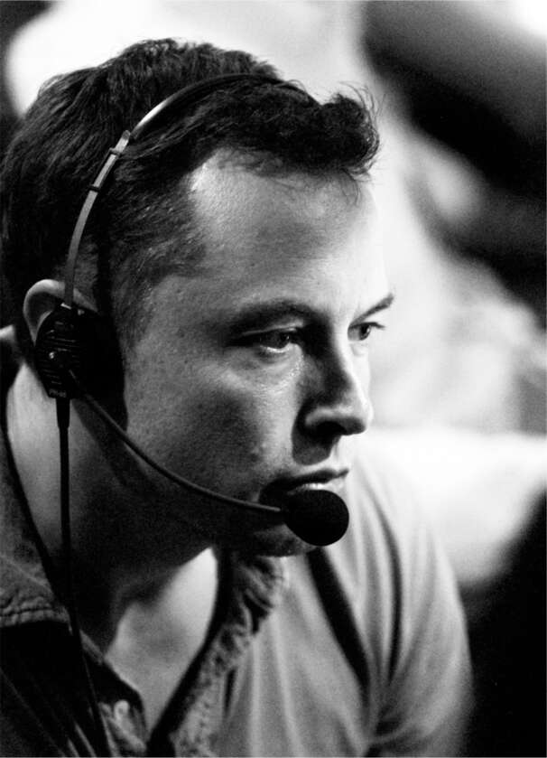

Vào ngày 1 tháng 2 năm 2008, một email đã được gửi đến nhân viên tại trụ sở Tesla. "P1 đã đến!", email thông báo. "P1" là mật danh của chiếc Roadster đầu tiên hoàn thành quy trình sản xuất. Musk đã có bài phát biểu ngắn gọn và sau đó lái chiếc Roadster vòng quanh Palo Alto như một vòng đua chiến thắng.
Việc ra mắt một vài chiếc xe, tất cả đều được lắp ráp thủ công, chỉ là một chiến thắng nhỏ. Nhiều công ty ô tô, đã phá sản và bị lãng quên từ lâu, cũng đã làm những điều tương tự. Thách thức tiếp theo là phải có một quy trình sản xuất có thể tạo ra ô tô một cách có lãi. Trong thế kỷ qua, chỉ có một công ty ô tô Mỹ (Ford) đã làm được điều đó mà không phải trải qua phá sản.
Thời điểm đó, không ai rõ Tesla có thể trở thành hãng xe lớn thứ hai hay không. Cuộc khủng hoảng thị trường nhà đất dưới chuẩn đã bắt đầu, dẫn đến suy thoái kinh tế toàn cầu tồi tệ nhất kể từ Đại Khủng hoảng. Chuỗi cung ứng của Tesla gặp khó khăn, và công ty sắp cạn tiền. Thêm vào đó, SpaceX vẫn chưa đưa được tên lửa nào lên quỹ đạo. Musk chia sẻ: "Dù tôi đã có chiếc Roadster, đó lại là khởi đầu của năm tháng khó khăn nhất cuộc đời tôi."
Musk thường xuyên đi sát giới hạn của pháp luật. Ông duy trì Tesla trong nửa đầu năm 2008 bằng cách sử dụng tiền đặt cọc của khách hàng cho những chiếc Roadster chưa được sản xuất. Một số giám đốc điều hành và thành viên hội đồng quản trị của Tesla cho rằng số tiền đặt cọc này nên được giữ trong tài khoản ký quỹ thay vì dùng cho chi phí vận hành, nhưng Musk khẳng định: "Chúng ta làm điều này hoặc là chết."
Khi tình hình trở nên tồi tệ hơn vào mùa thu năm 2008, Musk đã cầu xin tiền từ bạn bè và gia đình để trả lương cho nhân viên Tesla. Kimbal đã mất hầu hết tiền bạc trong cuộc suy thoái và cũng giống như anh trai mình, đang bên bờ vực phá sản. Anh ấy còn giữ 375.000 đô la cổ phiếu Apple, số tiền anh nói là cần để trả các khoản vay ngân hàng. Elon nói: "Em cần phải đầu tư số tiền đó vào Tesla." Kimbal, luôn ủng hộ anh trai, đã bán số cổ phiếu và làm theo lời Elon. Anh nhận được một cuộc gọi giận dữ từ nhân viên ngân hàng tại Colorado Capital cảnh báo rằng anh đang hủy hoại tín dụng của mình. Kimbal trả lời: "Tôi xin lỗi, nhưng tôi phải làm vậy." Vài tuần sau, khi nhân viên ngân hàng gọi lại, Kimbal chuẩn bị tinh thần cho một cuộc tranh cãi. Nhưng người này đã cắt ngang anh với tin tức rằng chính Colorado Capital vừa phá sản. Kimbal nói: "Năm 2008 tồi tệ đến vậy đấy."
Bạn của Musk, Bill Lee, đã đầu tư 2 triệu đô la, Sergey Brin của Google đầu tư 500.000 đô la, và thậm chí cả những nhân viên Tesla bình thường cũng viết séc. Musk vay mượn cá nhân để trang trải chi phí, bao gồm 170.000 đô la mỗi tháng cho luật sư ly hôn của mình và (theo luật California yêu cầu đối với người có thu nhập cao hơn) của Justine. Talulah nói về người bạn của Musk, chủ tịch đầu tiên của eBay: "Cảm ơn Jeff Skoll, người đã cho Elon tiền để vượt qua khó khăn." Antonio Gracias cũng giúp đỡ, cho anh vay 1 triệu đô la. Ngay cả bố mẹ của Talulah cũng đề nghị giúp đỡ. Cô nhớ lại: "Tôi rất buồn và đã gọi cho bố mẹ, và họ nói rằng họ sẽ thế chấp lại nhà để giúp đỡ." Musk đã từ chối lời đề nghị đó. Anh nói với cô: "Bố mẹ em không nên mất nhà chỉ vì anh đã dồn hết mọi thứ vào đây."
Talulah kinh hoàng chứng kiến đêm này qua đêm khác, Musk lẩm bẩm nói chuyện một mình, đôi khi vung tay và la hét. Cô nói: "Tôi cứ nghĩ anh ấy sẽ lên cơn đau tim. Anh ấy gặp ác mộng, hét lên trong giấc ngủ và cào cấu tôi. Thật kinh khủng. Tôi thực sự sợ hãi, và anh ấy hoàn toàn tuyệt vọng." Đôi khi anh ấy vào phòng tắm và bắt đầu nôn mửa. Cô nói: "Nó ảnh hưởng đến dạ dày của anh ấy, và anh ấy sẽ la hét và nôn khan. Tôi sẽ đứng bên cạnh bồn cầu và giữ đầu anh ấy."
Khả năng chịu đựng căng thẳng của Musk rất cao, nhưng năm 2008 gần như đã đẩy anh vượt quá giới hạn. Anh nói: "Tôi làm việc mỗi ngày, cả ngày lẫn đêm, trong tình huống buộc tôi phải liên tục xoay sở." Anh tăng cân rất nhiều, rồi đột ngột sụt cân. Tư thế của anh trở nên gù lưng, và các ngón chân cứng đờ khi anh bước đi. Nhưng anh trở nên tràn đầy năng lượng và tập trung cao độ. Áp lực nặng nề đã khiến anh dồn hết tâm trí.
Có một quyết định mà mọi người xung quanh Musk đều nghĩ rằng ông buộc phải đưa ra. Khi năm 2008 sắp kết thúc, dường như ông phải lựa chọn giữa SpaceX và Tesla. Nếu tập trung nguồn lực đang cạn kiệt của mình vào một công ty, ông có thể chắc chắn rằng nó sẽ tồn tại. Nếu cố gắng chia đôi nguồn lực, cả hai đều có thể sụp đổ. Một ngày nọ, Mark Juncosa, người bạn tâm giao đầy nhiệt huyết của ông, bước vào phòng làm việc của ông tại SpaceX. "Này anh bạn, sao anh không bỏ quách một trong hai thứ này đi?", anh ta hỏi. "Nếu SpaceX là tiếng gọi của trái tim anh, hãy vứt bỏ Tesla."
"Không", Musk nói, "đó sẽ là một dấu mốc nữa trên con đường 'Xe điện không hoạt động', và chúng ta sẽ không bao giờ đạt được năng lượng bền vững." Ông cũng không thể từ bỏ SpaceX. "Chúng ta có thể sẽ không bao giờ trở thành một loài đa hành tinh."
Càng nhiều người thúc ép ông lựa chọn, ông càng phản kháng. "Đối với tôi về mặt cảm xúc, điều này giống như bạn có hai đứa con và bạn sắp hết thức ăn", ông nói. "Bạn có thể chia cho mỗi đứa một nửa, khi đó cả hai đều có thể chết, hoặc đưa tất cả thức ăn cho một đứa và tăng cơ hội sống sót cho ít nhất một đứa. Tôi không thể tự mình quyết định rằng một trong hai sẽ chết, vì vậy tôi quyết định phải dốc toàn lực để cứu cả hai."

Trong phòng điều khiển SpaceX